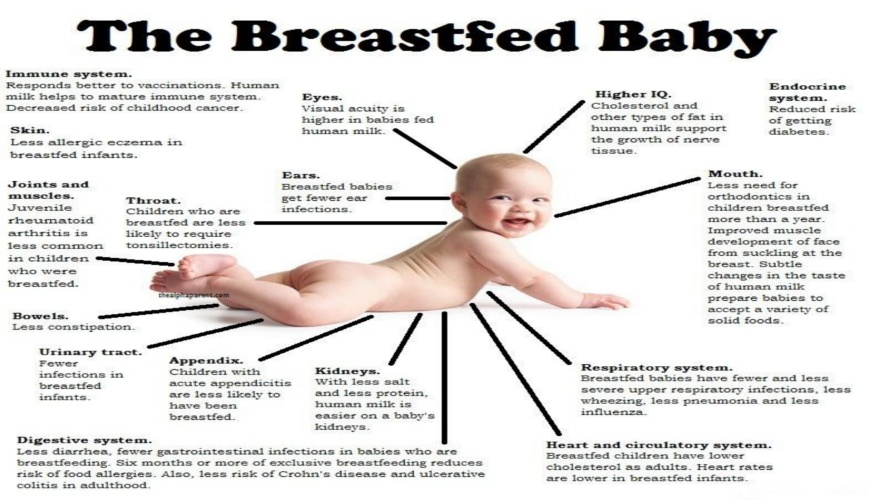

HOME
ABOUT
Breast-Feeding
Malnutrition
Successful Steps
Our Initiative
RELATED VIDEOS
CONTACT US
REGISTER NOW!

BREAST MILK....A BOON FOR A CHILD
Myths About Breast-Feeding
Nutrition For Infants
Feeding Through Breast Crawl
Malnutrition
Yogic Chart During & After Pregnancy
Nutrition for Pregnant Women